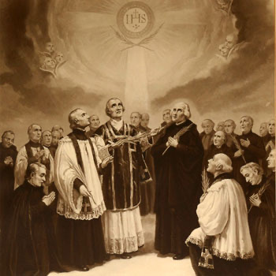

Isusovački blaženici
Svećenik
Bl. Maturin Nikola La Ville Crohain
1731. – 1792.
Mathurin Nicolas La Ville Crohain bio je kapelan benediktinkama u Parizu. Njegovu svećeničku službu prekinuo je progon vjernika tijekom Francuske revolucije u kojoj je stradao.
Tekst je preveden i prilagođen uz pomoć umjetne inteligencije.

Izvor slike
- Spomendan
- 2. rujna
- Zaštitništvo
- Nije navedeno u izvoru
- Životni vijek
- 1731. – 1792.
- Djelovanje
- Duhovno vodstvo i razlučivanje · Progoni i progonstvo · Mučeništvo
- Razdoblje
- 18. stoljeće
- Datum rođenja
- 19.12.1731.
- Mjesto rođenja
- Rennes, Francuska
- Datum smrti
- 02.09.1792.
- Mjesto smrti/mučeništva
- Karmelićanski samostan Les Carmes, Pariz, Francuska
- Okolnosti smrti/mučeništva
- Ubijen u rujanskim pokoljima tijekom Francuske revolucije nakon odbijanja prisege na Građanski ustav klera.
- Uloga
- Svećenik
- Mučenik
- Da
- Ostale oznake
- Rujanski mučenik; svećenik u vrijeme ukinuća Družbe Isusove
- Pripadnost
- Isusovac
- Drugi oblici imena
- Mathurin Nicolas La Ville Crohain · Mathurin · Mathurin Le Bous de Villeneuve de la Villecrohain
Životopis
Mathurin Nicolas La Ville Crohain rođen je 1731. u Rennesu. U osobnom je životopisu naveden i puniji oblik Mathurin Le Bous de Villeneuve de la Villecrohain. Bio je isusovački svećenik, a nakon ukinuća Družbe nastavio je pastoralnu službu u Parizu. Bio je kapelan benediktinkama u ulici Bellechasse. Henri Leclercq ističe i njegovu službu ispovjednika te redovničke zajednice.
Povijesni okvir njegova stradanja povezan je s pokušajem revolucionarnih vlasti da preurede Crkvu. Građanski ustav klera iz 1790. odredio je novi ustroj biskupija te izbor župnika i biskupa bez dotadašnjega papinskog potvrđivanja. Od svećenika je zatražena prisega. Pio VI. zabranio ju je 1791., a oni koji su je odbili postali su sumnjivi vlastima. U kolovozu 1792. donesena je mjera njihova protjerivanja. To je zajednički povijesni okvir pariških mučenika; ne podrazumijeva da je za svakoga sačuvan zaseban zapis o svim tim postupcima.
Ubijen je 2. rujna 1792. Leclercq ga navodi među žrtvama karmelskoga samostana. Njegov osobni put povezuje redovničku formaciju u Družbi s dugotrajnijom skrbi za drugu redovničku zajednicu, sve do nasilnoga prekida te službe u Parizu.
Tekst je preveden i prilagođen uz pomoć umjetne inteligencije.
Pročitaj više na izvornoj stranici ↗